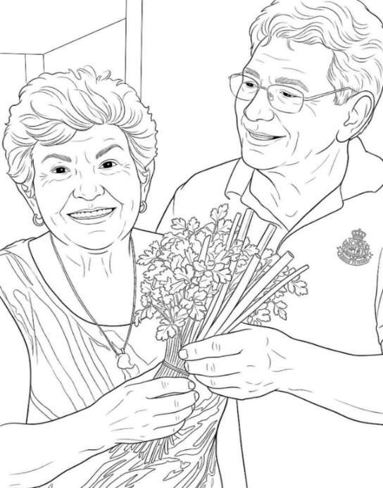

O Cheiro-Verde Atrasado e o Chope do Pinguim

Toda família tem uma história que começa com “foi só buscar uma coisinha”. Na família de Zelinda, essa história começa com um maço de cheiro-verde.
Zelinda preparava sua famosa farofa fria (farinha de milho, farinha de mandioca, azeitonas, tomates picadinhos e ovos cozidos) quando notou que faltava o toque final: o cheiro-verde.
Problema simples, solução simples. Chamou o irmão, Célio, e o marido, José Arnaldo:
— Vão à feira e me tragam um maço de cheiro-verde. Bem fresquinho.
Dois homens adultos, uma feira e um maço de cheiro-verde. Não tinha como dar errado.
Mas, no meio do caminho, tinha um Pinguim.
E o Pinguim, como todo ribeirão-pretano sabe, é a choperia mais famosa da cidade e o maior inimigo histórico do cheiro-verde.
Era só um chope, para refrescar. Depois veio outro, para o primeiro não ficar sozinho. A conversa engatou, o garçom passou de novo, e o cheiro-verde foi ficando cada vez mais distante: da feira, da farofa e da memória dos dois.
Em casa, passou meia hora. Uma hora. Duas.
Zelinda não esperou. Terminou a farofa, arrumou a cozinha e organizou os pratos. A farofa ficou pronta sem o cheiro-verde, que era, vale lembrar, o único motivo de toda aquela expedição.
Duas, três horas depois, a porta se abriu. Entraram Célio e José Arnaldo, corados, sorridentes e com aquele andar de quem passou a tarde “na feira”.
Célio sabia que vinha bronca. E Célio teve uma ideia. Não uma boa ideia, mas uma ideia.
Ergueu o maço de cheiro-verde como quem oferece um buquê de rosas e soltou a voz, à moda de Nelson Gonçalves:
Receba as flores que lhe dou E em cada flor um beijo meu São flores lindas que lhe dou
Rosas vermelhas com amor Amor que por você nasceu
Que seja assim por toda vida E a Deus mais nada pedirei Querida, mil vezes querida…
Empolgado com a própria interpretação, Célio achou que já estava perdoado. Respirou fundo, chegou o maço mais perto da irmã e voltou ao primeiro verso, agora com toda a emoção:
- Receba as flores que lhe dou…
Zelinda olhou para o maço. Depois olhou para o irmão. Depois olhou para o maço de novo.
Enfia no C... que já murchou!
E tinha murchado mesmo. Três horas de Pinguim fazem isso com qualquer um.
A farofa? Ficou ótima. Sem cheiro-verde mesmo.